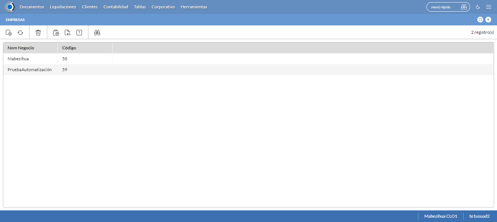
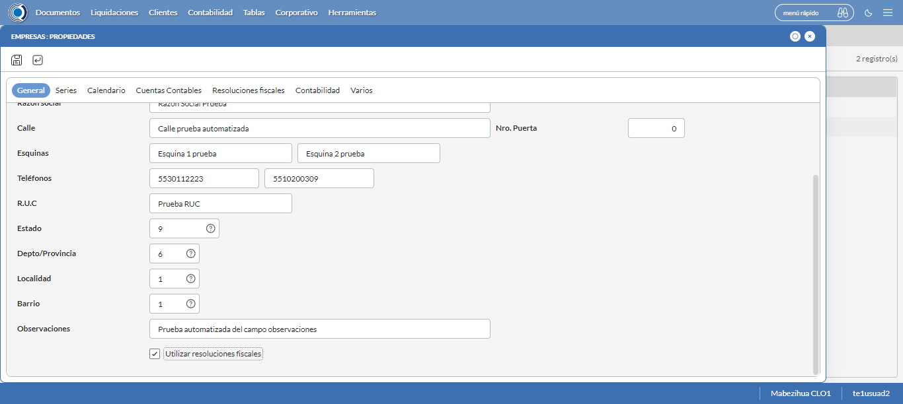
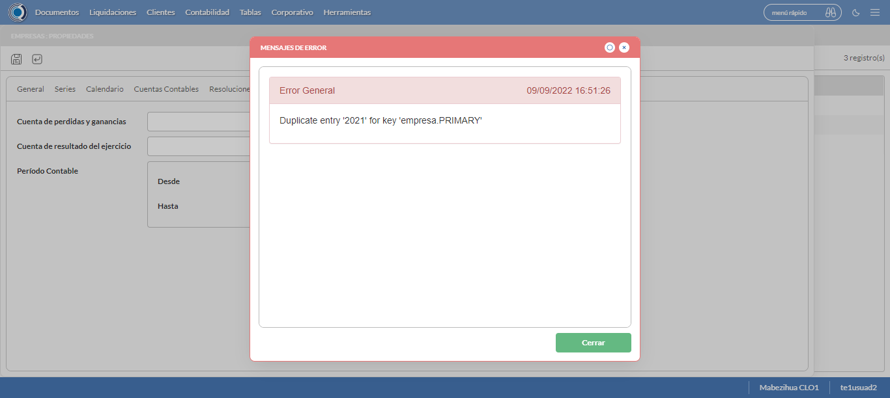
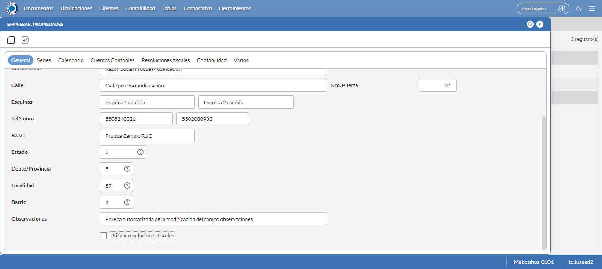
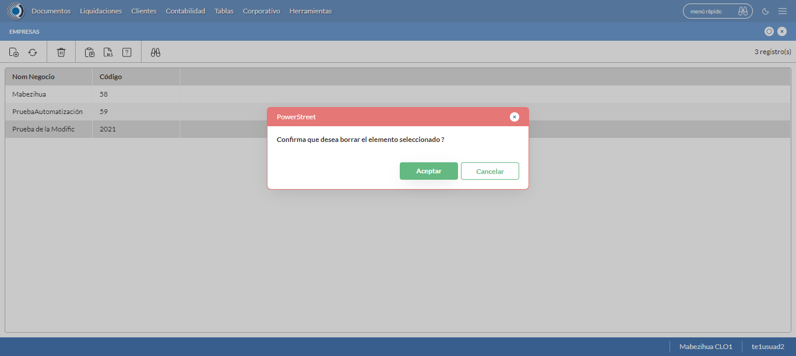

Desarrollado por : Area de Testing PWST
Fecha y hora de inicio : 2022-09-09 11:46:05
Duracion : 0:11:07.393863
Resultado : Total 8，Correctos 8 ，Taza de resultado 100.00%
Resumen 100.00% Errores 0 Fallidos 0 Correctos 8 Test realizados 8
| Caso de Prueba | Total | Correctos | Fallido | Error | Detalles | Captura del error |
| Empresas.Test: Escenario 1 de Empresas | 8 | 8 | 0 | 0 | Detalles | |
test |
pt1_1: 2022-09-09 11:46:08,369 - root - INFO - Se abre el chrome
2022-09-09 11:46:09,810 - root - INFO - Entra a la URL
2022-09-09 11:46:09,952 - root - INFO - Maximiza la pantalla
2022-09-09 11:46:13,017 - root - INFO - Cambia al frame
|
|
||||
test_000: Ingresa a la base de datos |
pt1_2: 2022-09-09 11:46:16,157 - root - INFO - Escribe el usuario
2022-09-09 11:46:16,283 - root - INFO - Escribe la contraseña
2022-09-09 11:46:16,455 - root - INFO - Se dio clic en el boton ingresar
2022-09-09 11:46:17,262 - root - INFO - Ejecutar Enterprise
2022-09-09 11:46:17,264 - root - INFO - Captura: C:\xampp\htdocs\versiones\automatizaciones\AutoPWST\01EMP\report\img screen：20220909_11_46_17.png
2022-09-09 11:46:21,497 - root - INFO - Cambia entre pestañas
|

|
||||
test_001: Abre menu y ejecuta pantalla |
pt1_3: 2022-09-09 11:46:26,626 - root - INFO - Abre el menu completo
2022-09-09 11:46:39,537 - root - INFO - Abre la pantalla de Empresas
2022-09-09 11:46:39,623 - root - INFO - La pantalla ejecutada es Empresas
2022-09-09 11:46:42,637 - root - INFO - Captura: C:\xampp\htdocs\versiones\automatizaciones\AutoPWST\01EMP\report\img screen：20220909_11_46_42.png
2022-09-09 11:46:42,837 - root - INFO - Se presiona el boton 'Nuevo', para crear un nuevo registro.
|
 | ||||
test_002: Abre la ventana de nuevo y crear un registro |
pt1_4: 2022-09-09 11:46:47,906 - root - INFO - Se abrio la pantalla para el ingreso de un registro nuevo.
2022-09-09 11:46:47,946 - root - INFO - El campo 'Codigo' si se encuentra visible.
2022-09-09 11:46:47,986 - root - INFO - El campo 'Descrición' si se encuentra visible.
2022-09-09 11:46:48,025 - root - INFO - El campo 'Codigo Alternativo' si se encuentra visible.
2022-09-09 11:46:48,064 - root - INFO - El campo 'Codigo GLN' si se encuentra visible.
2022-09-09 11:46:48,104 - root - INFO - El campo 'Razón social' si se encuentra visible.
2022-09-09 11:46:48,144 - root - INFO - El campo 'Calle' si se encuentra visible.
2022-09-09 11:46:48,184 - root - INFO - El campo 'Esquinas' si se encuentra visible.
2022-09-09 11:46:48,223 - root - INFO - El campo 'Teléfonos' si se encuentra visible.
2022-09-09 11:46:48,269 - root - INFO - El campo 'R.U.C' si se encuentra visible.
2022-09-09 11:46:48,308 - root - INFO - El campo 'Estado' si se encuentra visible.
2022-09-09 11:46:48,346 - root - INFO - El campo 'Depto/Provincia' si se encuentra visible.
2022-09-09 11:46:48,385 - root - INFO - El campo 'Localidad' si se encuentra visible.
2022-09-09 11:46:48,424 - root - INFO - El campo 'Barrio' si se encuentra visible.
2022-09-09 11:46:48,466 - root - INFO - El campo 'Observaciones' si se encuentra visible.
2022-09-09 11:46:48,506 - root - INFO - El campo 'Resoluciones Fiscales' si se encuentra visible.
2022-09-09 11:46:48,544 - root - INFO - El campo 'Nro. Puerta' si se encuentra visible.
2022-09-09 11:46:48,606 - root - INFO - Ingresa el codigo del nuevo registro
2022-09-09 11:46:51,777 - root - INFO - Ingresa la descripción del nuevo registro
2022-09-09 11:46:54,933 - root - INFO - Ingresa el codigo alternativo del nuevo registro
2022-09-09 11:46:58,071 - root - INFO - Ingresa el codigo GLN del nuevo registro
2022-09-09 11:47:01,231 - root - INFO - Ingresa la Razón Social del nuevo registro
2022-09-09 11:47:04,388 - root - INFO - Ingresa la calle del nuevo registro
2022-09-09 11:47:07,551 - root - INFO - Ingresa la esquina 1 del nuevo registro
2022-09-09 11:47:10,689 - root - INFO - Ingresa la esquina 2 del nuevo registro
2022-09-09 11:47:13,823 - root - INFO - Ingresa el Telefono 1 del nuevo registro
2022-09-09 11:47:16,949 - root - INFO - Ingresa el Telefono 2 del nuevo registro
2022-09-09 11:47:20,076 - root - INFO - Ingresa el ruc del nuevo registro
2022-09-09 11:47:30,529 - root - INFO - Se dió doble click en el registro de Estado.
2022-09-09 11:47:40,991 - root - INFO - Se dió doble click en el registro de Depto/Provincia.
2022-09-09 11:47:51,496 - root - INFO - Se dió doble click en el registro de Localidad.
2022-09-09 11:48:01,977 - root - INFO - Se dió doble click en el registro de Barrio.
2022-09-09 11:48:05,171 - root - INFO - Ingresa las Observaciones del nuevo registro
2022-09-09 11:48:08,273 - root - INFO - Se dió click en el checkbox Resoluciones Fiscales.
2022-09-09 11:48:11,278 - root - INFO - Captura: C:\xampp\htdocs\versiones\automatizaciones\AutoPWST\01EMP\report\img screen：20220909_11_48_11.png
2022-09-09 11:48:11,503 - root - INFO - Ingresa el Num de la puerta del nuevo registro
2022-09-09 11:48:14,621 - root - INFO - Se hace el cambio a la pestaña Series para continuar con el registro nuevo
2022-09-09 11:48:17,734 - root - INFO - Se presiona el boton 'Nuevo', para crear un nuevo registro de Series.
2022-09-09 11:48:22,809 - root - INFO - El campo 'Código' si se encuentra visible.
2022-09-09 11:48:22,849 - root - INFO - El campo 'Descripción' si se encuentra visible.
2022-09-09 11:48:22,889 - root - INFO - El campo 'Codigo alternativo' si se encuentra visible.
2022-09-09 11:48:22,947 - root - INFO - Ingresa el Codigo del nuevo registro
2022-09-09 11:48:26,098 - root - INFO - Ingresa la Descripcion del nuevo registro
2022-09-09 11:48:29,208 - root - INFO - Ingresa el Codigo alternativo del nuevo registro
2022-09-09 11:48:32,312 - root - INFO - Se hace el cambio a la pestaña Configuración Vias para continuar con el registro nuevo
2022-09-09 11:48:35,455 - root - INFO - Se presiona el boton 'Nuevo', para crear un nuevo registro de Configuración Vias.
2022-09-09 11:48:40,537 - root - INFO - El campo 'Tipo Documento' si se encuentra visible.
2022-09-09 11:48:40,580 - root - INFO - El campo 'Vías en BackOffice' si se encuentra visible.
2022-09-09 11:48:40,631 - root - INFO - El campo 'Vías en Mobile' si se encuentra visible.
2022-09-09 11:48:40,673 - root - INFO - El campo 'Descrpción de vías' si se encuentra visible.
2022-09-09 11:48:40,735 - root - INFO - Ingresa el Tipo Documento del nuevo registro
2022-09-09 11:48:43,868 - root - INFO - Ingresa las Vias Backoffice del nuevo registro
2022-09-09 11:48:47,005 - root - INFO - Ingresa las Vias Mobile del nuevo registro
2022-09-09 11:48:50,140 - root - INFO - Ingresa la Descripción Vias del nuevo registro
2022-09-09 11:48:53,245 - root - INFO - Se presiona el boton 'Guardar', para guardar el registro de Configuracion Vias .
2022-09-09 11:48:58,357 - root - INFO - Se presiona el boton 'Guardar', para guardar el registro de Serie.
2022-09-09 11:49:03,458 - root - INFO - Se hace el cambio a la pestaña Calendario para continuar con el registro nuevo
2022-09-09 11:49:06,534 - root - INFO - El campo 'Lunes' si se encuentra visible.
2022-09-09 11:49:06,573 - root - INFO - El campo 'Martes' si se encuentra visible.
2022-09-09 11:49:06,614 - root - INFO - El campo 'Miércoles' si se encuentra visible.
2022-09-09 11:49:06,653 - root - INFO - El campo 'Jueves' si se encuentra visible.
2022-09-09 11:49:06,692 - root - INFO - El campo 'Viernes' si se encuentra visible.
2022-09-09 11:49:06,733 - root - INFO - El campo 'Sábado' si se encuentra visible.
2022-09-09 11:49:06,773 - root - INFO - El campo 'Domingo' si se encuentra visible.
2022-09-09 11:49:06,848 - root - INFO - Se dió click en el checkbox Lunes.
2022-09-09 11:49:09,970 - root - INFO - Se dió click en el checkbox Martes.
2022-09-09 11:49:13,075 - root - INFO - Se dió click en el checkbox Miercoles.
2022-09-09 11:49:16,199 - root - INFO - Se dió click en el checkbox Jueves.
2022-09-09 11:49:19,318 - root - INFO - Se dió click en el checkbox Viernes.
2022-09-09 11:49:22,427 - root - INFO - Se dió click en el checkbox Sabado.
2022-09-09 11:49:25,541 - root - INFO - Se hace el cambio a la pestaña Contabilidad para continuar con el registro nuevo
2022-09-09 11:49:28,615 - root - INFO - El campo 'Período Contable' si se encuentra visible.
2022-09-09 11:49:28,658 - root - INFO - El campo 'Desde' si se encuentra visible.
2022-09-09 11:49:28,699 - root - INFO - El campo 'Hasta' si se encuentra visible.
2022-09-09 11:49:28,845 - root - INFO - Ingresa la fecha Desde del nuevo registro
2022-09-09 11:49:32,038 - root - INFO - Ingresa la fecha Hasta del nuevo registro
2022-09-09 11:49:35,158 - root - INFO - Se da clic en el boton Guardar; se debe crear un nuevo registro.
|
 | ||||
test_003: Repetir el registro creado anteriormente |
pt1_5: 2022-09-09 11:49:40,264 - root - INFO - Se presiona el boton 'Refrescar', para crear un nuevo registro igual al anterior.
2022-09-09 11:49:45,355 - root - INFO - Se presiona el boton 'Nuevo', para crear un nuevo registro igual al anterior.
2022-09-09 11:49:50,428 - root - INFO - Se abrio la pantalla para el ingreso de un registro nuevo.
2022-09-09 11:49:50,491 - root - INFO - Ingresa el codigo del nuevo registro
2022-09-09 11:49:53,705 - root - INFO - Ingresa la descripción del nuevo registro
2022-09-09 11:49:56,843 - root - INFO - Ingresa el codigo alternativo del nuevo registro
2022-09-09 11:49:59,966 - root - INFO - Ingresa el codigo GLN del nuevo registro
2022-09-09 11:50:03,117 - root - INFO - Ingresa la Razón Social del nuevo registro
2022-09-09 11:50:06,256 - root - INFO - Ingresa la calle del nuevo registro
2022-09-09 11:50:09,439 - root - INFO - Ingresa la esquina 1 del nuevo registro
2022-09-09 11:50:12,575 - root - INFO - Ingresa la esquina 2 del nuevo registro
2022-09-09 11:50:15,710 - root - INFO - Ingresa el Telefono 1 del nuevo registro
2022-09-09 11:50:18,861 - root - INFO - Ingresa el Telefono 2 del nuevo registro
2022-09-09 11:50:22,012 - root - INFO - Ingresa el ruc del nuevo registro
2022-09-09 11:50:32,494 - root - INFO - Se dió doble click en el registro de Estado.
2022-09-09 11:50:42,986 - root - INFO - Se dió doble click en el registro de Depto/Provincia.
2022-09-09 11:50:53,485 - root - INFO - Se dió doble click en el registro de Localidad.
2022-09-09 11:51:03,948 - root - INFO - Se dió doble click en el registro de Barrio.
2022-09-09 11:51:07,182 - root - INFO - Ingresa las Observaciones del nuevo registro
2022-09-09 11:51:10,262 - root - INFO - Se dió click en el checkbox Resoluciones Fiscales.
2022-09-09 11:51:13,275 - root - INFO - Captura: C:\xampp\htdocs\versiones\automatizaciones\AutoPWST\01EMP\report\img screen：20220909_11_51_13.png
2022-09-09 11:51:13,506 - root - INFO - Ingresa el Num de la puerta del nuevo registro
2022-09-09 11:51:16,610 - root - INFO - Se hace el cambio a la pestaña Contabilidad para continuar con el registro nuevo
2022-09-09 11:51:19,777 - root - INFO - Ingresa la fecha Desde del nuevo registro
2022-09-09 11:51:22,986 - root - INFO - Ingresa la fecha Hasta del nuevo registro
2022-09-09 11:51:26,127 - root - INFO - Se da clic en el boton Guardar; NO se debe crear un nuevo registro.
2022-09-09 11:51:31,143 - root - INFO - Captura: C:\xampp\htdocs\versiones\automatizaciones\AutoPWST\01EMP\report\img screen：20220909_11_51_31.png
2022-09-09 11:51:31,372 - root - INFO - Se presiona el boton 'Cerrar', para cerrar el mensaje de duplicidad de llave primaria
2022-09-09 11:51:34,488 - root - INFO - Se presiona el boton 'Cerrar', para cerrar la ventana
|
 | ||||
test_004: Modificar el registro |
pt1_6: 2022-09-09 11:51:38,586 - root - INFO - Se presiona el boton 'Refrescar', para proceder a modificar el registro.
2022-09-09 11:51:48,224 - root - INFO - Se da clic en el registro creado, para proceder a modificarlo.
2022-09-09 11:51:51,470 - root - INFO - Se modifica el contenido del campo Descripción
2022-09-09 11:51:54,619 - root - INFO - Se modifica el contenido del campo Codigo Alternativo
2022-09-09 11:51:57,815 - root - INFO - Se modifica el contenido del campo Codigo GLN
2022-09-09 11:52:01,016 - root - INFO - Se modifica el contenido del campo Razón Social
2022-09-09 11:52:04,199 - root - INFO - Se modifica el contenido del campo Calle
2022-09-09 11:52:07,360 - root - INFO - Se modifica el contenido del campo Esquina 1
2022-09-09 11:52:10,550 - root - INFO - Se modifica el contenido del campo Esquina 2
2022-09-09 11:52:13,697 - root - INFO - Se modifica el contenido del campo telefono 1
2022-09-09 11:52:16,878 - root - INFO - Se modifica el contenido del campo telefono 2
2022-09-09 11:52:20,054 - root - INFO - Se modifica el contenido del campo RUC
2022-09-09 11:52:30,547 - root - INFO - Se dió doble click en el registro de Estado.
2022-09-09 11:52:41,021 - root - INFO - Se dió doble click en el registro de Depto/Provincia.
2022-09-09 11:52:51,469 - root - INFO - Se dió doble click en el registro de Localidad.
2022-09-09 11:53:01,980 - root - INFO - Se dió doble click en el registro de Barrio.
2022-09-09 11:53:05,263 - root - INFO - Se modifica el contenido del campo Observaciones
2022-09-09 11:53:08,380 - root - INFO - Se dió click en el checkbox Resoluciones Fiscales.
2022-09-09 11:53:11,396 - root - INFO - Captura: C:\xampp\htdocs\versiones\automatizaciones\AutoPWST\01EMP\report\img screen：20220909_11_53_11.png
2022-09-09 11:53:11,664 - root - INFO - Se modifica el contenido del campo Num de Puerta
2022-09-09 11:53:14,767 - root - INFO - Se hace el cambio a la pestaña Series para continuar con la modificación del registro
2022-09-09 11:53:22,386 - root - INFO - Se da clic en el registro de Series, para proceder a modificarlo.
2022-09-09 11:53:25,577 - root - INFO - Se modifica el contenido del campo Descripción
2022-09-09 11:53:28,764 - root - INFO - Se modifica el contenido del campo Codigo Alternativo
2022-09-09 11:53:31,856 - root - INFO - Se hace el cambio a la pestaña Configuración de Vías para continuar con la modificación del registro
2022-09-09 11:53:39,486 - root - INFO - Se da clic en el registro de Configuración Vías, para proceder a modificarlo.
2022-09-09 11:53:42,660 - root - INFO - Se modifica el contenido del campo Tipo Documento
2022-09-09 11:53:45,824 - root - INFO - Se modifica el contenido del campo Vías Backoffice
2022-09-09 11:53:48,972 - root - INFO - Se modifica el contenido del campo Vías Mobile
2022-09-09 11:53:52,143 - root - INFO - Se modifica el contenido del campo Descripción
2022-09-09 11:53:55,257 - root - INFO - Se presiona el boton 'Guardar', para guardar la modificación del registro de Configuración Vías.
2022-09-09 11:54:00,377 - root - INFO - Se presiona el boton 'Guardar', para guardar la modificación del registro Series.
2022-09-09 11:54:05,484 - root - INFO - Se hace el cambio a la pestaña Calendario para continuar con la modificación del registro
2022-09-09 11:54:08,590 - root - INFO - Se dió click en el checkbox Lunes.
2022-09-09 11:54:11,685 - root - INFO - Se dió click en el checkbox Miercoles.
2022-09-09 11:54:14,808 - root - INFO - Se dió click en el checkbox Sabado.
2022-09-09 11:54:17,910 - root - INFO - Se hace el cambio a la pestaña Resoluciones Fiscales para continuar con la modificación del registro
2022-09-09 11:54:21,010 - root - INFO - Se presiona el boton 'Nuevo', para crear un nuevo registro de Resoluciones Fiscales.
2022-09-09 11:54:26,104 - root - INFO - El campo 'Fecha Autorización' si se encuentra visible.
2022-09-09 11:54:26,145 - root - INFO - El campo 'Serie' si se encuentra visible.
2022-09-09 11:54:26,184 - root - INFO - El campo 'Nro. Resolución' si se encuentra visible.
2022-09-09 11:54:26,224 - root - INFO - El campo 'Rango Correlativo' si se encuentra visible.
2022-09-09 11:54:33,667 - root - INFO - Se dió doble click en el registro de Serie.
2022-09-09 11:54:36,821 - root - INFO - Ingresa el Num de la puerta del nuevo registro
2022-09-09 11:54:39,944 - root - INFO - Ingresa el Rango Inicio del nuevo registro
2022-09-09 11:54:43,067 - root - INFO - Ingresa el Rango Fin del nuevo registro
2022-09-09 11:54:46,178 - root - INFO - Se da clic en el boton Guardar; se debe guardar el registro de Resolución Fiscal.
2022-09-09 11:54:51,309 - root - INFO - Se da clic en el boton Guardar; se debe modificar la informacion del registro.
|
 | ||||
test_005: Eliminar el registro creado |
pt1_7: 2022-09-09 11:54:56,419 - root - INFO - Se presiona el boton 'Refrescar', para proceder a eliminar el registro.
2022-09-09 11:55:06,025 - root - INFO - Se da clic en el registro creado, para proceder a eliminarlo.
2022-09-09 11:55:09,143 - root - INFO - Se hace el cambio a la pestaña Resoluciones Fiscales para continuar con la eliminación del registro
2022-09-09 11:55:16,757 - root - INFO - Se da clic en el registro en el Registro de Resoluciones Fiscales, para proceder a modificarlo.
2022-09-09 11:55:24,864 - root - INFO - Se presiona el boton 'Eliminar', para eliminar el registro de Resoluciones Fiscales.
2022-09-09 11:55:24,974 - root - INFO - Se da clic en el boton Guardar; se debe modificar la informacion del registro.
2022-09-09 11:55:34,619 - root - INFO - Se da clic en el registro creado, para proceder a eliminarlo.
2022-09-09 11:55:37,729 - root - INFO - Se hace el cambio a la pestaña Series para continuar con la eliminación del registro
2022-09-09 11:55:45,379 - root - INFO - Se da doble click en el registro de series, para proceder a eliminarlo.
2022-09-09 11:55:48,492 - root - INFO - Se hace el cambio a la pestaña Coniguración Vias para continuar con la eliminación del registro
2022-09-09 11:55:56,141 - root - INFO - Se da clic en el registro de Configuración Vías, para proceder a modificarlo.
2022-09-09 11:56:04,243 - root - INFO - Se presiona el boton 'Eliminar', para eliminar el registro de Configuración Vías.
2022-09-09 11:56:04,367 - root - INFO - Se da clic en el boton Guardar; se debe modificar la informacion del registro Series.
2022-09-09 11:56:09,471 - root - INFO - Se da clic en el boton Guardar; se debe modificar la informacion del registro.
2022-09-09 11:56:19,108 - root - INFO - Se da clic en el registro creado, para proceder a eliminarlo.
2022-09-09 11:56:22,211 - root - INFO - Se hace el cambio a la pestaña Series para continuar con la eliminación del registro
2022-09-09 11:56:29,836 - root - INFO - Se da clic en el registro series, para proceder a eliminarlo.
2022-09-09 11:56:37,944 - root - INFO - Se presiona el boton 'Eliminar', para eliminar el registro de Series.
2022-09-09 11:56:38,091 - root - INFO - Se da clic en el boton Guardar; se debe modificar la informacion del registro.
2022-09-09 11:56:47,701 - root - INFO - Se da clic en el registro creado, para proceder a eliminarlo.
2022-09-09 11:56:55,821 - root - INFO - Se presiona el boton 'Eliminar', para eliminar el registro.
2022-09-09 11:56:55,823 - root - INFO - Captura: C:\xampp\htdocs\versiones\automatizaciones\AutoPWST\01EMP\report\img screen：20220909_11_56_55.png
2022-09-09 11:56:56,047 - root - INFO - Se confirma el eliminado del registro
2022-09-09 11:57:01,143 - root - INFO - Se presiona el boton 'Refrescar', para verificar si el registro ha sido eliminado.
2022-09-09 11:57:06,252 - root - INFO - Se presiona el boton 'Cerrar', para cerrar la pantalla de Empresas.
|
 | ||||
test_006: Cerrar_Navegador |
pt1_8: 2022-09-09 11:57:13,024 - root - INFO - Se cierra chrome
|
|
||||
| Caso de prueba | 8 | 8 | 0 | 0 | Taza de resultado：100.00% | |